- XHRs and Fetches
- Override Network Requests
- Override Request Headers
- Override Languages
- Element Creation
- Element Detection
- Event Listener
- Event Features
- element.style
- Detect UA Sniffing
- Spoof User Agent
- Scrolling
- document.write
- Inputs and Links
- Audio/Video
- Task Scheduling
- Shadow DOM
- Geolocation
- Disable debugger keyword
- function.bind helper
- Bypass Site CORS Settings
Usage
Firstly a disclaimer: this add-on is not meant to be used during general browsing, but only in browser profiles meant for testing web sites. This add-on may cause sites to break entirely, and has features which can cause privacy or even security issues. Use at your own risk.
This addon works by providing a number of "hooks" which are accessible through a browser action menu, a panel on the developer tools, and via a console API. These hooks allow for logging accesses or changes to various scripting APIs and HTML elements, logging or altering network requests, and spoofing how the browser presents itself. Hooks are tab-specific and temporary to the browsing session.
To use the GUI, simply click on the browser toolbar icon (or open the devtools panel), then select a hook and customize how and when it ought to trigger. For instance, it is possible to log any PUT XMLHttpRequests or fetches to specific API endpoints, trip the JS debugger when a particular event fires on certain elements, override Geolocation coordinates several times while running a web app, re-write network requests to a given URL to a file on another (perhaps local) server, or even detect when properties that are not supported by the browser are accessed, including removed features like window.components or ones never supported by Firefox such as window.event.
| Browser Toolbar interface | Devtools panel interface |
|---|---|
| 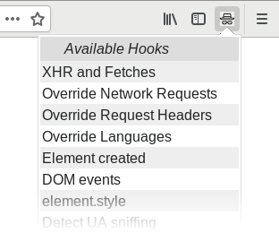 |  |
Since browser toolbar popups will disappear upon losing focus, the devtools panel can be useful when copy-and-pasting from other applications. However, it does not function in the remote devtools when debugging Android, so a special console API is also provided to help make it possible to control the addon more easily in a remote devtools session while debugging on Firefox for Android.
Note that hooks are dynamically set or unset, so it is possible to only begin using hooks after getting the site into an interesting state, and disable or alter them while viewing a page. However, it may be necessary to set a hook and hard-reload the page in order for it to be of any practical use (especially to thwart browser caching or for properties that pages tend to check early, such as user-agent spoofs).
Also bear in mind that hooks are tab-specific — they will remain applied on the same tab even if you navigate away to another domain. In fact they will remain active on the tab until disabled in the user interface or console API, or the add-on is disabled or browser exited. They do not persist and are not remembered when the browser is restarted.
Console API
A programmatically-driven console API can be accessed from the developer tools, making it possible to use the remote developer tools to more conveniently set up hooks. However, it is obfuscated to prevent its abuse by malicious websites. Information on how to access it is logged to the web and browser consoles as follows:
>> TinkerTesterDeveloperSpy is now available as window['2c95887e-f107-4d61-a87c-9938b503f4b4']
It may be easier to work with it by first capturing it into a variable in the web console:
>> let Tinker = window['2c95887e-f107-4d61-a87c-9938b503f4b4']
The API may be used to update specific hooks programmatically:
>> Tinker.ObserveXHRandFetch.update({onSend: "log stack trace", onlyURLs: "cart.php", onlyMethods: "POST"});
<- "OK"
>> Tinker.ObserveXHRandFetch.check();
<- Object { onSend: "log stack trace", onlyURLs: "cart.php", onlyMethods: "POST", enabled: true }
Each hook has its own options which mirror its UI options. They are documented in the Hooks section below.
Note that hooks are enabled by default when calling update; to disable them it is necessary to specify enabled: false.
Most hooks have event callbacks like onSend, onGet, or onSet, which generally support these values:
| Value | Description |
|---|---|
| "log stack trace" | To log a stack trace in the web console. |
| "start debugger" | Start the debugger at the script location the event occurred. |
| "ignore" | Turn the event into a no-op returning undefined. |
| "hide" | Try to hide the property/method entirely, as though it does not exist. |
| "nothing" | Do nothing for this event (optional; "nothing" is assumed if a value is not provided). |
| function source code | Use the return value of whatever this function returns (or whatever the original function returns if it returns undefined). |
Hooks
In general, note that hooks are often only useful when set up before a page has already loaded. As such it is useful to set up your hooks, then reload the page in order to ensure that hooks have applied early enough.
Note that hooks which can accept a regular expression require that you input the expression in this format: /expression/flags (where the flags can include g, i, m, u, or y). If this format is not matched, then it will be interpreted as a string, not a regular expression. When using regular expressions with the console API, it is important to escape any forward-slashes meant to be part of the regular expression (for instance, "\\d+" rather than \d+).
A reference for the specific hooks the add-on makes available now follows, grouped as they are in the user-interface.
XHRs and Fetches
Detects when network requests are sent by scripts using XMLHttpRequest or fetch.
Can be restricted to detecting requests using only specific HTTP methods (a case-insensitive, comma-separated list or a regular expression) or sent to specific URL (or a regular expression matching URLs).
| User-interface | Console API |
|---|---|
| 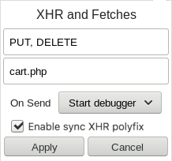 | |
Override Network Requests
Allow re-mapping specific network requests to other destinations or a raw ECMAScript string. Works by matching each outgoing request's URL against a string or regular expression, and changing it to either a given string, or the results of fetching another URL ("redirecting").
Note that regular expression search-and-replace is also performed (see below for examples). Take care to escape dollar-signs ($) as appropriate. In addition, take care to specify the `g` flag on the regular expression if all matches should be replaced.
Note that forward slashes need to be double-escaped when using the console API, unlike the GUI. Also note that it is not currently possible to re-map to file:// URLs due to security restrictions enforced by extension APIs; local files must be served over HTTP(S).
| User-interface | Console API |
|---|---|
| 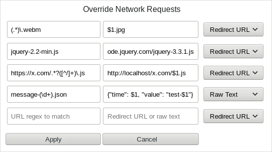 | |
Override Request Headers
Allows overriding the value of HTTP headers sent with all requests. It is possible to always set a header to a specific value regardless of what value it would normally have, or to only override for requests where the header would not normally be sent.
| User-interface | Console API |
|---|---|
 |
|
Override Languages
Allows overriding the navigator's language, as far as the website sees it. By specifying the value this hook should sent for the Accept-Language HTTP header value, it will also override the values of the navigator.language and navigator.languages properties which will be visible to scripts (for instance, for the value en-GB,en;q=0.8,sv, it will provide en-US and ["en-GB", "en", "sv"], respectively).
| User-interface | Console API |
|---|---|
| 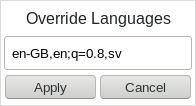 | |
Element Creation
Allows logging whenever DOM elements with the specified node names are created (whether or not they are also being added to the document). This includes various methods such as innerHTML and createNodeNS, and also new Audio().
| User-interface | Console API |
|---|---|
| 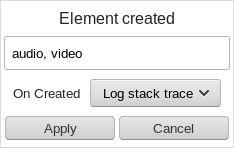 | |
Element Detection
Allows logging when elements in the DOM suddenly match the specified CSS selector, or stop matching it. For instance, if an element is added to, removed from, or moved around in the DOM, its attributes or JS properties change, or any other node involved in the CSS selector suddenly makes the selector match (or stop matching). This includes nodes being added while the page naturally loads.
| User-interface | Console API |
|---|---|
| 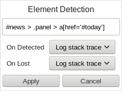 | |
Event Listener
Allows discovery of the addition, removal, or firing of a specified list of event handler types (or regular expression), and potentially only on elements with the given CSS selector. It is additionally possible to ignore the addition or removal of handlers, or ignore the handler while events are firing.
| User-interface | Console API |
|---|---|
| 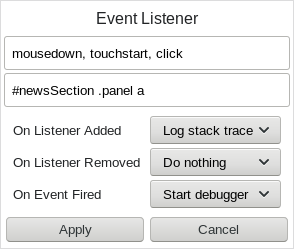 | |
Event Features
Provides hooks for detecting when sites use various event-related script features, such as focusing elements, manually dispatching events, preventing the default action of various event-types, or using window.event or srcElement.
| User-interface | Console API |
|---|---|
| 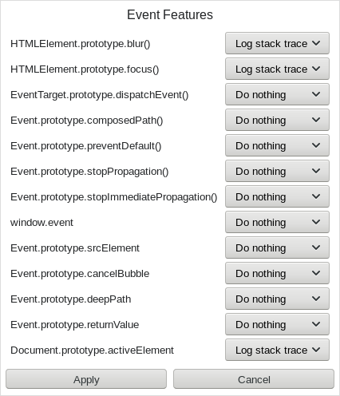 | |
element.style
Allows detecting where and when the specified CSS properties (a comma-separated list) are being altered using the scripting style API. Can also be limited to detecting when those properties only have given values (a list or regular expression). This can be useful for a wide variety of tasks such as determining when elements are shown or hidden, have their transform style changed, or even when a property unsupported by Firefox like zoom or webkitOverflowScrolling is being accessed or altered.
| User-interface | Console API |
|---|---|
| 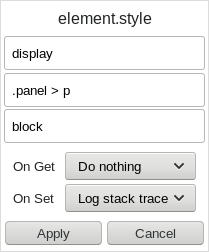 | |
Detect UA Sniffing
Allows detecting when sites are using classic script-based user agent sniffing techniques. This can be very useful for complex sites which often obscure or over-use sniffs such that a simple global search for the method is impractical. This can include properties which Firefox does not actually support.
| User-interface | Console API |
|---|---|
| 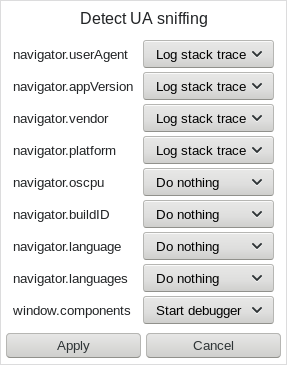 | |
Spoof User Agent
Allows quick UA-spoofing from a set of browser version presets. These spoofs may attempt to spoof more than just the UserAgent string, in order to better mimic the environment of their browser and device.
| User-interface | Console API |
|---|---|
| 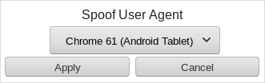 | |
Scrolling
Enables the detection of many scrolling-related scripting techniques, including detecting programmatic scrolling, mouse wheel event handling, reading element dimensions, and judging whether the page is basing its scrolling behavior on the body or documentElement, rather than using the modern document.scrollingElement property.
| User-interface | Console API |
|---|---|
| 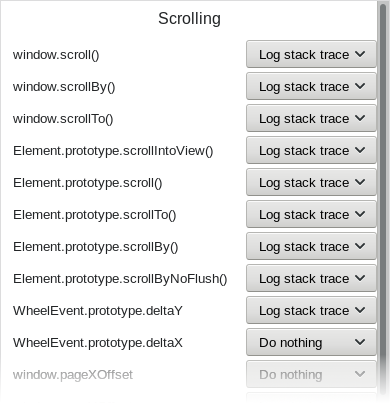 | |
document.write
Allows finding or even ignoring calls to document.write and document.writeln, both of which can cause subtle issues which might break pages, sometimes due to third-party ads or other less managed content.
| User-interface | Console API |
|---|---|
| 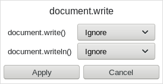 | |
Inputs and Links
Allows detecting when link sources are changed by scripts or they are programmatically clicked, and likewise when checkboxes and radio buttons are programmatically toggled.
| User-interface | Console API |
|---|---|
| 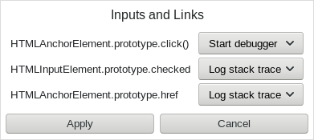 | |
Audio/Video
Allows logging when audio or video tags are played, paused, or have their sources changed. Also allows logging when audio elements are specifically created with new Audio().
| User-interface | Console API |
|---|---|
| 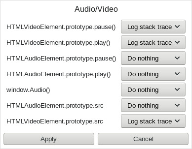 | |
Task Scheduling
Allows monitoring the use of requestAnimationFrame, setTimeout, setInterval, and attempts to use the unsupported setImmediate call (as well as their related clearing functions).
| User-interface | Console API |
|---|---|
| 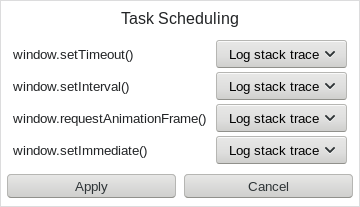 | |
Shadow DOM
Allows hooking into Shadow DOM v0 and v1 functions.
| User-interface | Console API |
|---|---|
| 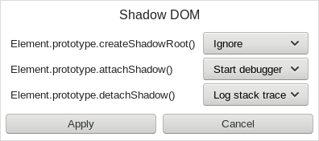 | |
Geolocation
Allows spoofing the UA-presentated Geolocation coordinates. If this value is changed multiple times, sites using the navigator.geolocation.watchPosition API will notice the changes. This could be useful for testing sites, especially using the console API to provide a steady stream of realistic-looking changed values.
Note: to match Firefox defaults, accuracy will default to 1000, heading and speed to NaN, and other values to 0.
| User-interface | Console API |
|---|---|
| 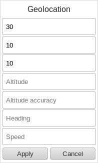 | |
Disable debugger keyword
Some sites try to abuse the debugger scripting keyword to make it more difficult to debug their pages. This hook will disable the keyword.
Note that this will not resume script execution if the debugger is already paused; it may be necessary to manually press the debugger's resume button.
Also note that this feature may cause unexpected breakage if sites are evaluating source code which contains the word "debugger" for purposes other than invoking the script debugger.
| User-interface | Console API |
|---|---|
| 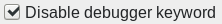 | |
function.bind helper
Sites and apps will sometimes use function.bind, and it can be difficult to determine what the original bound function was, what values it was bound to, or where it has been bound in the source code.
This hook will add two properties to each bound function, _boundFunction and _boundArguments, and also log a stack trace to the web console whenever a function is being bound. Note that it will miss functions bound before it is first enabled for a given page; it may be necessary to refresh the tab in order to hook into all bound functions.
| User-interface | Console API |
|---|---|
 |
|
Bypass Site CORS Settings
This is an experimental feature which attempts to bypass CORS by replacing common CORS header values with a set of values which permit as open an environment as possible. This is quite obviously a bad idea outside of quick tests, and it may even break sites entirely. Use sparingly, and with caution.
| User-interface | Console API |
|---|---|
| 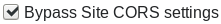 | |